Abashiri
Abashiri · Hokkaido
Abashiri
Highlighted on the Hokkaido map.
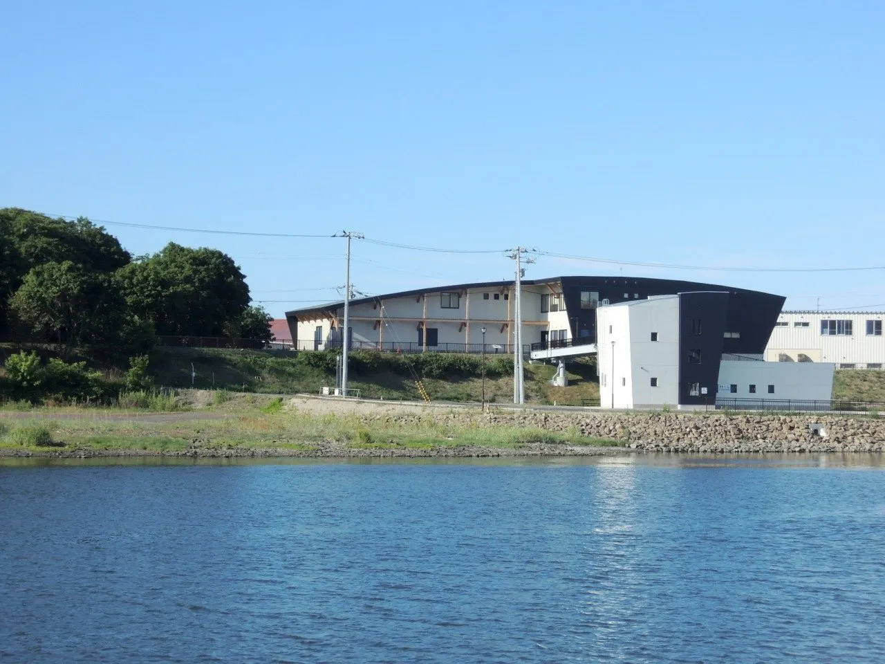
Stay
網走 ホテルオホーツク・イン
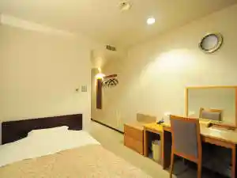
Abashiri Hoteruohootsuku In
網走セントラルホテル
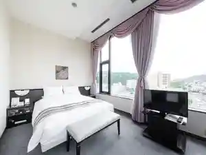
Abashiri Sentoraruhoteru
天然温泉 天都の湯 ドーミーイン網走
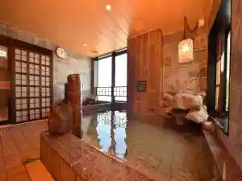
Tennen Onsen Tento No Yu Doomiiin Abashiri
北海ホテル
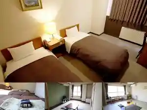
Hokkai Hoteru
網走ロイヤルホテル
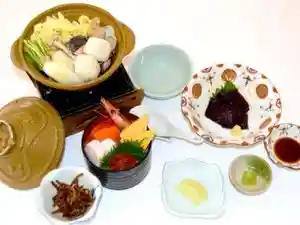
Abashiri Roiyaruhoteru
ホテルルートイン網走駅前
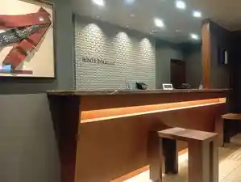
Hoteruruutoin Abashirieki Mae
東横ＩＮＮオホーツク・網走駅前
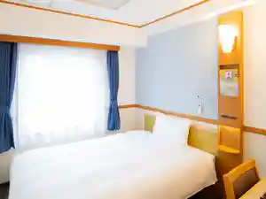
Touyoko I N N Ohootsuku Abashirieki Mae
ホテル サンアバシリ
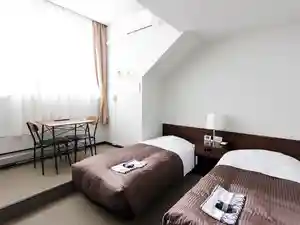
Hoteru San'Abashiri
民宿ランプ
Minshuku Ranpu
オーベルジュ北の暖暖
Ooberuju Kita No Dan Dan
ファームイン アニマの里
Faamuin Anima No Sato
天都の宿 網走観光ホテル（BBHホテルグループ）
Tento No Yado Abashiri Kankou Hoteru ( Bbh Hoteruguruupu )
Dining
焼肉マルイシ
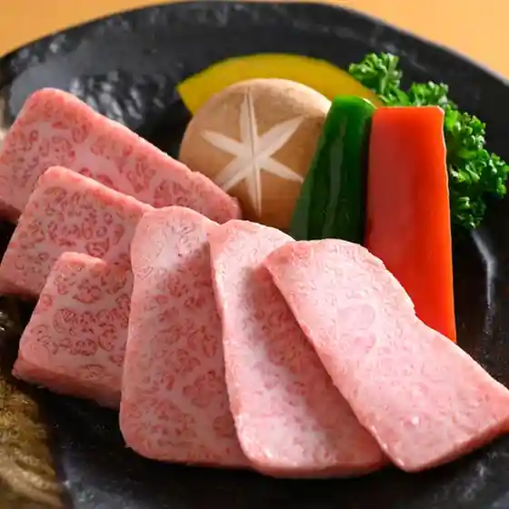
Yakiniku Maruishi
酒菜亭 喜八
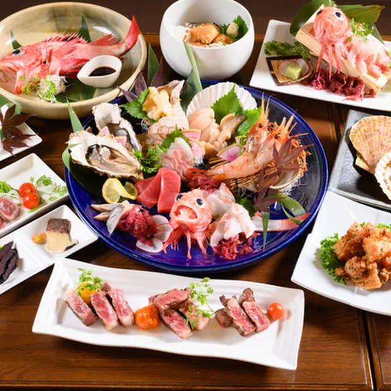
Shusai Tei Kihachi
五十集屋
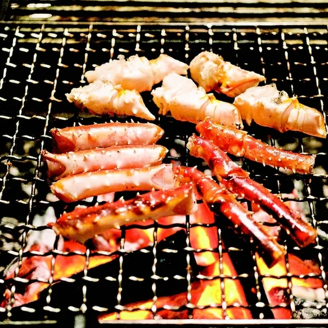
Gojuu Shuu Ya
SUSHI BAR THE ƎND -縁戸-
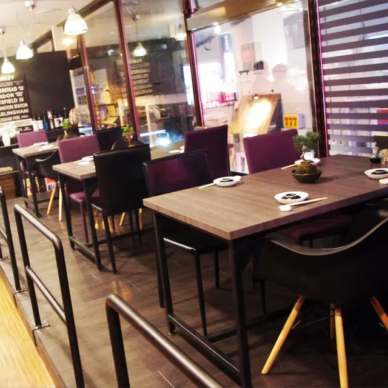
Sushi Bar The Sushi Bar The Nd - Heri Ko
白木屋 網走南4条西1丁目店

Shirokiya Abashiri Minami 4 Jousai 1 Choume Mise
串揚げダイニング 流物揚
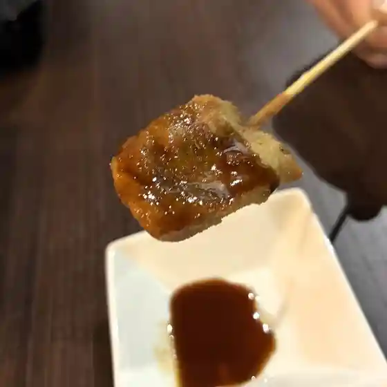
Kushi Age Dainingu Nagaremono You
チャグチャグ馬コ
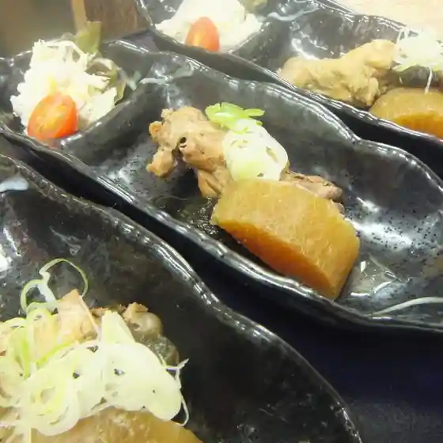
Chaguchagu Uma Ko
和食処 ゆずり
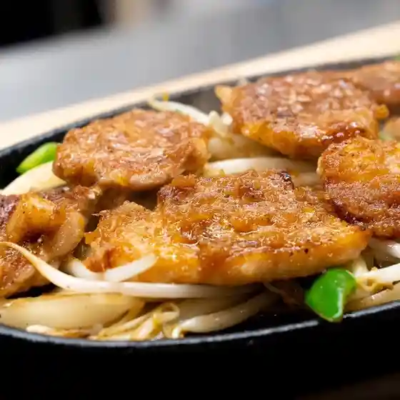
Washoku Tokoro Yuzuri
鮨 やまし田
Sushi Yamashi Ta
焼肉海鮮 炭よし
Yakiniku Kaisen Sumi Yoshi
焼肉 あじと
Yakiniku Ajito
オホーツク産直市場 かにや
Ohootsuku Sanchoku Shijou Kaniya
ちぱしり
Chipashiri
中華工房 菜華
Chuuka Koubou Na Hana
アルジス
Arujisu
監獄食堂
Kangoku Shokudou
セブンイレブン 網走南２条店
Sebun'Irebun Abashiri Minami 2 Jou Mise
小僧寿し 網走店
Kozou Hisashi Shi Abashiri Mise
手打ちそば サラザン
Teuchi Chisoba Sarazan
オホーツクカントリークラブ
Ohootsukukantoriikurabu
炭火やきとん ブッチャー横山
Sumibi Yakiton Butchaa Yokoyama
流氷観光砕氷船おーろら 売店
Ryuuhyou Kankou Saihyou Fune Oorora Baiten
浜長
Hama Chou
ジャック ローズ
Jakku Roozu
Sights
Abashiri Prefectural Kyodo Museum Annex Moyoro Shell Mound Hall
Abashiri Prefectural Kyodo Museum Annex Moyoro Shell Mound Hall
Hokkaido Prefectural Ohotsuku Park Tentorando
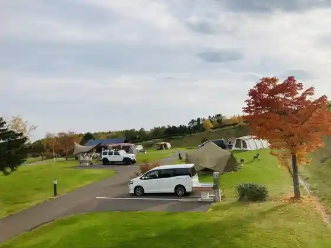
Hokkaido Prefectural Ohotsuku Park Tentorando